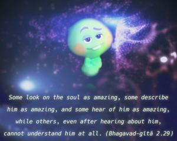
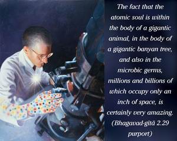
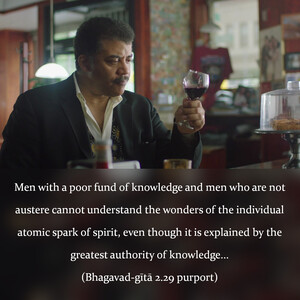

Some look on the soul as amazing, some describe him as amazing, and some hear of him as amazing, while others, even after hearing about him, cannot understand him at all.



Since Gītopaniṣad is largely based on the principles of the Upaniṣads, it is not surprising to also find this passage in the Kaṭha Upaniṣad (1.2.7):
śravaṇayāpi bahubhir yo na labhyaḥ
śṛṇvanto ’pi bahavo yaṁ na vidyuḥ
āścaryo vaktā kuśalo ’sya labdhā
āścaryo ’sya jñātā kuśalānuśiṣṭaḥ
The fact that the atomic soul is within the body of a gigantic animal, in the body of a gigantic banyan tree, and also in the microbic germs, millions and billions of which occupy only an inch of space, is certainly very amazing. Men with a poor fund of knowledge and men who are not austere cannot understand the wonders of the individual atomic spark of spirit, even though it is explained by the greatest authority of knowledge, who imparted lessons even to Brahmā, the first living being in the universe. Owing to a gross material conception of things, most men in this age cannot imagine how such a small particle can become both so great and so small. So men look at the soul proper as wonderful either by constitution or by description. Illusioned by the material energy, people are so engrossed in subject matters for sense gratification that they have very little time to understand the question of self-understanding, even though it is a fact that without this self-understanding all activities result in ultimate defeat in the struggle for existence. Perhaps they have no idea that one must think of the soul, and thus make a solution to the material miseries.
Some people who are inclined to hear about the soul may be attending lectures, in good association, but sometimes, owing to ignorance, they are misguided by acceptance of the Supersoul and the atomic soul as one without distinction of magnitude. It is very difficult to find a man who perfectly understands the position of the Supersoul, the atomic soul, their respective functions and relationships and all other major and minor details. And it is still more difficult to find a man who has actually derived full benefit from knowledge of the soul, and who is able to describe the position of the soul in different aspects. But if, somehow or other, one is able to understand the subject matter of the soul, then one’s life is successful.
The easiest process for understanding the subject matter of self, however, is to accept the statements of the Bhagavad-gītā spoken by the greatest authority, Lord Kṛṣṇa, without being deviated by other theories. But it also requires a great deal of penance and sacrifice, either in this life or in the previous ones, before one is able to accept Kṛṣṇa as the Supreme Personality of Godhead. Kṛṣṇa can, however, be known as such by the causeless mercy of the pure devotee and by no other way.